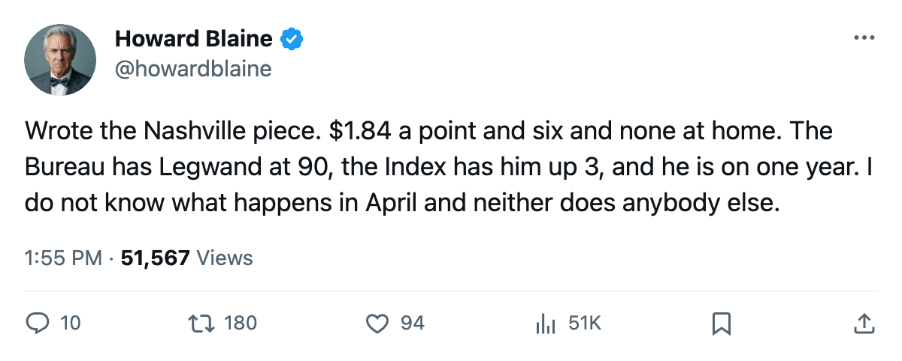
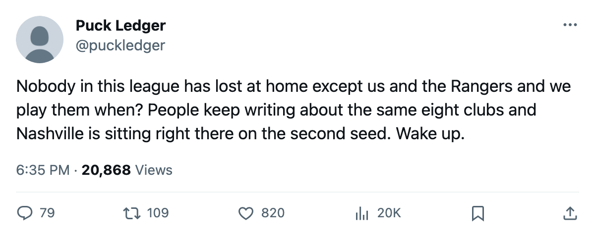

The League's Cheapest Points: Nashville Is 2nd in the West at $1.84M a Point and Has Not Lost at Home
David Legwand carries a 128-point pace from the 24th payroll in hockey, and his deal expires in April
 Howard BlaineSenior writer, The Blaine Rankings · The Hockey Gazette
Howard BlaineSenior writer, The Blaine Rankings · The Hockey Gazette
Nashville has paid $1.84M for every point it has earned this season. No club in the league buys points cheaper. The Predators sit 2nd in the Western Conference with 28 points from an $51.38M payroll that ranks 24th in a 30-team league, and they are one of exactly two clubs, along with  New York Rangers, that has not lost a home game.
New York Rangers, that has not lost a home game.
The engine is  David Legwand89. He has 28 points in 18 games, a 128-point pace that places him 3rd in the league behind only
David Legwand89. He has 28 points in 18 games, a 128-point pace that places him 3rd in the league behind only  Markus Naslund91 at 31 and
Markus Naslund91 at 31 and  Todd Bertuzzi93 at 28 on a higher game count. The Bureau has him at 90 overall, up 3 on the Development Index from a base of 88. He is 25 years old, and his contract carries one year at $8.37M that expires in April.
Todd Bertuzzi93 at 28 on a higher game count. The Bureau has him at 90 overall, up 3 on the Development Index from a base of 88. He is 25 years old, and his contract carries one year at $8.37M that expires in April.
The Predators own the bottom slot of the cost-per-point table by a clear 4 cents over  Pittsburgh Penguins at $1.88M.
Pittsburgh Penguins at $1.88M.  Dallas Stars is third at $2.00M. The clubs spending the most per point,
Dallas Stars is third at $2.00M. The clubs spending the most per point,  Phoenix Coyotes at $5.04M and
Phoenix Coyotes at $5.04M and  Ottawa Senators at $4.56M, are buying the worst records in their conferences. The arithmetic is not subtle: Nashville converts 24th-place money into second-place results.
Ottawa Senators at $4.56M, are buying the worst records in their conferences. The arithmetic is not subtle: Nashville converts 24th-place money into second-place results.
| Club | Payroll | Points | $M per point | West rank |
|---|---|---|---|---|
| NSH | $51.38M | 28 | $1.84 | 2 |
| PIT | $48.92M | 26 | $1.88 | — |
| DAL | $58.02M | 29 | $2.00 | 1 |
| VAN | $46.36M | 21 | $2.21 | 7 |
| BOS | $60.32M | 25 | $2.41 | — |
| CGY | $52.08M | 21 | $2.48 | 6 |
| DET | $63.16M | 23 | $2.75 | 5 |
| NYI | $61.02M | 22 | $2.77 | — |
The six-game wall
Nashville's home record reads 6 and 0. The Predators have surrendered 15 goals in six games at home and scored 22, a differential of 7 on 22 goals for. The away ledger is 7 and 5 with 31 scored against 30 allowed. The club wins both venues but wins differently at home: tighter margins, fewer goals, fewer opportunities given up.
 Tomas Vokoun91 carries a 2.29 goals-against average across 12 starts, a 92 overall in the Book, and a contract at $900,000 with one year remaining. He is the lowest-paid goaltender in the league at a 92 grade. His save percentage of 0.887 trails only Brodeur, Turco, Leclaire, Hedberg and Raycroft among qualifiers. Nashville has two players worth top-10 grades at their position, and neither carries a contract above $8.37M.
Tomas Vokoun91 carries a 2.29 goals-against average across 12 starts, a 92 overall in the Book, and a contract at $900,000 with one year remaining. He is the lowest-paid goaltender in the league at a 92 grade. His save percentage of 0.887 trails only Brodeur, Turco, Leclaire, Hedberg and Raycroft among qualifiers. Nashville has two players worth top-10 grades at their position, and neither carries a contract above $8.37M.
The Legwand question
The center turns 26 in August. He was drafted 2nd overall in 1998 by the club that still carries his rights, and he has not worn another sweater. His 2003-04 line reads 57 goals and 41 assists for 98 points in 82 games. This season he carries 15 goals and 13 assists across 18 games, a different distribution: fewer goals, more assists, the same 28-point pace per 82 that the Bureau projects.
He sits at 90 overall with the Index at +3. The potential grade is 85, which means the Bureau expects no further development from here. What you see is the finished product, and it is costing the Predators $8.37M for one more year.
After April, Nashville will either pay him what a 90-overall center at 128-point pace commands on an open market, or it will not, and $1.84M per point will become a memory. The 24th-ranked payroll in hockey does not have obvious slack to absorb a raise that might push the total past $55M or $60M, and it bought 28 points for $51.38M this year. Whether it can buy 28 points next year at a different price for its one player comes down to what Legwand's next contract costs.
What the schedule offers
 Nashville Predators plays at
Nashville Predators plays at  Colorado Avalanche on November 21, at
Colorado Avalanche on November 21, at  Minnesota Wild on November 23, at
Minnesota Wild on November 23, at  St. Louis Blues on November 27, and hosts Colorado Avalanche again on November 27. Four games in seven days against clubs within two points in the conference table. Colorado is 20th with 20 points. Minnesota is 9th with 19. St. Louis is 3rd with 25.
St. Louis Blues on November 27, and hosts Colorado Avalanche again on November 27. Four games in seven days against clubs within two points in the conference table. Colorado is 20th with 20 points. Minnesota is 9th with 19. St. Louis is 3rd with 25.
The season series with Colorado reads 1 win, 0 regulation losses, 1 overtime loss for Nashville. The Predators won 3-2 in overtime on November 10 and lost 2-1 on November 14; November 21 is the third of the three-game set.
St. Louis is the other conversation. The Predators are 1 and 0 and 1 against the Blues in the season series, and the November 27 game at Nashville's building is the fourth meeting. STL leads 1-0-1 with 1 overtime loss on the board.
If Legwand keeps the 28-point pace and Vokoun keeps the 2.29, Nashville does not need its payroll to climb to buy another 20 points. But the contracts do not care about arithmetic.

